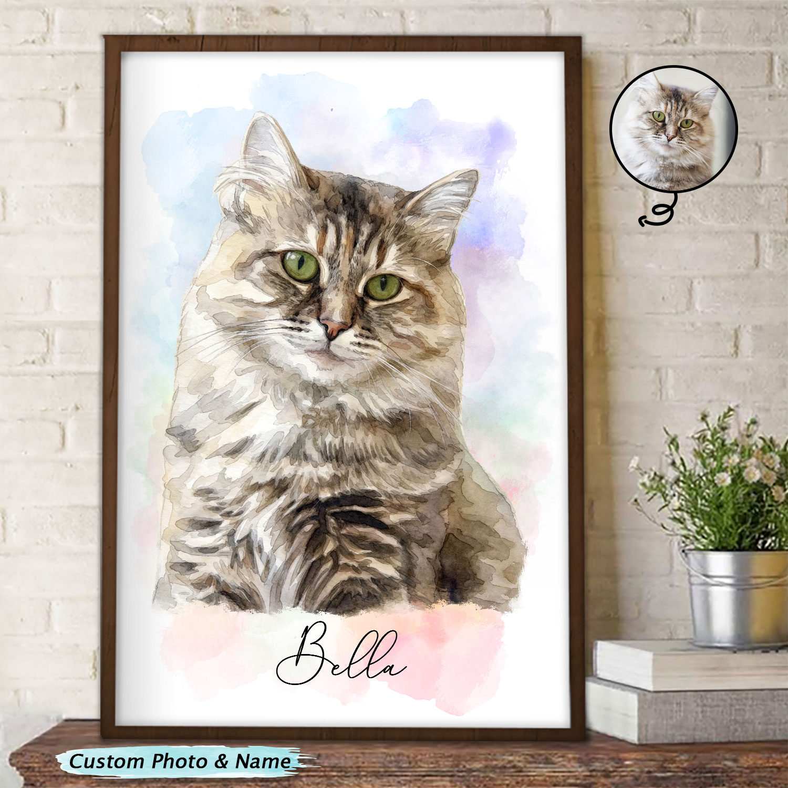
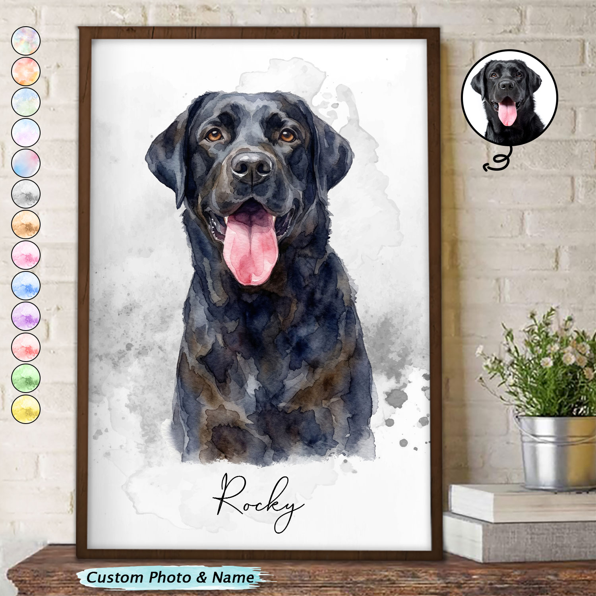

não obtidoa Meta não publica gasto para e-commerce fora dos recortes regulatórios
O que isso prova
Que o anúncio está no ar há 1029 dias: alguém segue pagando por ele.
O que isso não prova
Escala, gasto, faturamento ou lucro: a Meta não publica gasto de anúncio comercial.
Vídeo salvo localmente, sem capa (ffmpeg ausente nesta máquina)
VIDEO
Personalized Family Gifts
🎨 Turn Their Photo into Art
🐶🎨 Turn Your Pet into a Watercolor Keepsake Upload a photo and get a custom portrait that captures their spirit. 🎁 Perfect for pet lovers, new additions, or heartfelt
no ar há 457 dias · desde 21/07/2025
ativo
Prova do anúncio
Personalized Family Gifts
🐶🎨 Turn Your Pet into a Watercolor Keepsake Upload a photo and get a custom portrait that captures their spirit. 🎁 Perfect for pet lovers, new additions, or heartfelt
não obtidoa Meta não publica gasto para e-commerce fora dos recortes regulatórios
O que isso prova
Que o anúncio está no ar há 396 dias: alguém segue pagando por ele.
O que isso não prova
Escala, gasto, faturamento ou lucro: a Meta não publica gasto de anúncio comercial.
Vídeo salvo localmente, sem capa (ffmpeg ausente nesta máquina)
VIDEO
DoyoBest
❤️🩹 A Metal Car Hanger that will accompany you
🥹Let an angel accompany you on every journey. Pet Memorial Metal Car Hanger 👇🏻👇🏻Order Now 👇🏻👇🏻 https://doyobest.com/products/10080565035325 #doyobest #gift #pers
no ar há 363 dias · desde 23/10/2025
ativo
Prova do anúncio
DoyoBest
🥹Let an angel accompany you on every journey. Pet Memorial Metal Car Hanger 👇🏻👇🏻Order Now 👇🏻👇🏻 https://doyobest.com/products/10080565035325 #doyobest #gift #pers
não obtidoa Meta não publica gasto para e-commerce fora dos recortes regulatórios
O que isso prova
Que o anúncio está no ar há 196 dias: alguém segue pagando por ele.
O que isso não prova
Escala, gasto, faturamento ou lucro: a Meta não publica gasto de anúncio comercial.

IMAGE
Wander Prints Home Decor
Custom Photo Realistic Watercolor Art Portrait Cat Dog Pet - Personali
With delicate watercolor touches, this poster reveals your cat’s quiet charm in every painted detail 🐾 Order here → https://wanderprints.com/kk1518nah5764 Worldwide Ship
no ar há 190 dias · desde 14/04/2026
ativo
Prova do anúncio
Wander Prints Home Decor
With delicate watercolor touches, this poster reveals your cat’s quiet charm in every painted detail 🐾 Order here → https://wanderprints.com/kk1518nah5764 Worldwide Ship
não obtidoa Meta não publica gasto para e-commerce fora dos recortes regulatórios
O que isso prova
Que o anúncio está no ar há 190 dias: alguém segue pagando por ele.
O que isso não prova
Escala, gasto, faturamento ou lucro: a Meta não publica gasto de anúncio comercial.

IMAGE
Wander Prints Home Decor
Custom Photo Realistic Watercolor Art Portrait Cat Dog Pet - Personali
Captured in soft watercolor strokes, this poster brings your loyal dog’s spirit to life forever 🐾 Order here → https://wanderprints.com/kk1518nah5764 Worldwide Shipping!
no ar há 190 dias · desde 14/04/2026
ativo
Prova do anúncio
Wander Prints Home Decor
Captured in soft watercolor strokes, this poster brings your loyal dog’s spirit to life forever 🐾 Order here → https://wanderprints.com/kk1518nah5764 Worldwide Shipping!
não obtidoa Meta não publica gasto para e-commerce fora dos recortes regulatórios
O que isso prova
Que o anúncio está no ar há 190 dias: alguém segue pagando por ele.
O que isso não prova
Escala, gasto, faturamento ou lucro: a Meta não publica gasto de anúncio comercial.
LimiteOs dois vídeos foram salvos em disco, mas ficaram sem capa porque a máquina não tem o ffmpeg. Os outros oito têm imagem local em criativos/, nunca link de CDN (expira em horas).
04Anatomia dos vencedores
Criativo
Big idea
Gancho
Ângulo e estrutura
Objeção que responde
Texto na tela
Wander Prints, aquarela de pet
190 dias · imagem · lida na imagem
Seu gato ou cão como obra de arte na parede
Foto original do pet num círculo ao lado da arte, mostrando o antes e o depois
Presente de decoração. Estrutura: moldura na parede, arte, selo, planta
Vai parecer com ele? Resposta: a foto original ao lado da arte
"Custom Photo & Name", nome "Bella"
Macorner, vaso "Never Forgotten"
212 dias · imagem · lida na imagem
Um memorial discreto para plantar algo vivo
Mão segurando o vaso com a planta, close de produto
Memorial. Estrutura: vaso, desenho do gato em brasão com datas, 5 opções de raça embaixo
Vai ser a minha raça? Resposta: tira de 5 raças e cores
"NEVER FORGOTTEN", "CUSTOMIZE YOUR CAT BREEDS", nome e anos
Doyobest, pendente de carro memorial
363 dias · vídeo · lido só pelo texto
Um anjo que acompanha você em toda viagem
Texto: "Let an angel accompany you on every journey"
Memorial. Estrutura: texto emocional, link direto, hashtags de luto
Resposta implícita: lembrança que anda com você
não obtidovídeo sem capa, quadros não inspecionados
Pawsome Parents (GeckoCustom)
1.029 dias · imagem · lido só pelo texto
Presente personalizado para quem ama o pet
Texto direto: "Perfect Personalized Gift For Pet Lovers!"
Presente genérico. Estrutura: uma linha e um link
Nenhuma tratada no texto
não obtidoimagem não inspecionada
Estilo do criativoEstilo do criativo (os dois que foram lidos na imagem): 2 de 2 são foto do produto com o nome do pet escrito e selo de personalização, sem pessoa e sem vídeo. Os outros 6 estáticos e os 2 vídeos foram lidos só pelo texto. Não há UGC nem demonstração de uso nessa amostra.
05Formato e roteiro
Formato
Roteiro
Uso recomendado
Estático, produto com nome
foto do produto + nome do pet + selo "Custom Photo & Name"
topo de funil e remarketing; é o formato mais barato de produzir
Estático, antes e depois
foto do pet ao lado da arte
responde "vai parecer com ele?" sem texto
Vídeo curto de 8 a 12 s
upload da foto, arte aparecendo, produto pronto
testar depois que o estático vender; exige capa e edição
06Fonte e limites
LimiteFonte: Biblioteca de Anúncios da Meta, busca pública headless (minerar.js), 20/10/2026. A amostra vem de buscas por termos de pet e traz só os anúncios que casaram com essas palavras. Gasto e impressões não existem para anúncio comercial fora da UE.
observado visto na fontecalculado conta declaradainferido leitura do analistarecomendado ação sugeridanão obtido a fonte não entregou, motivo ao lado
 IMAGE
IMAGE